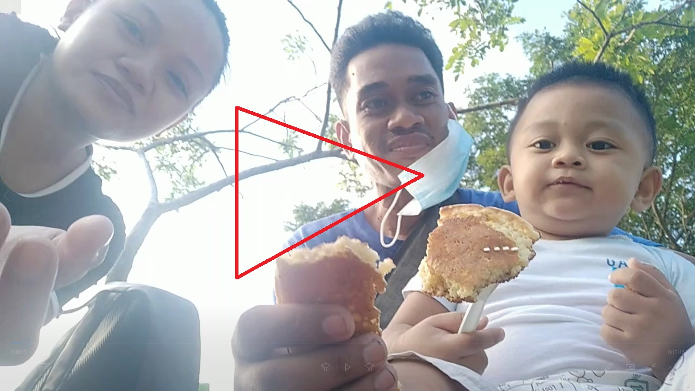
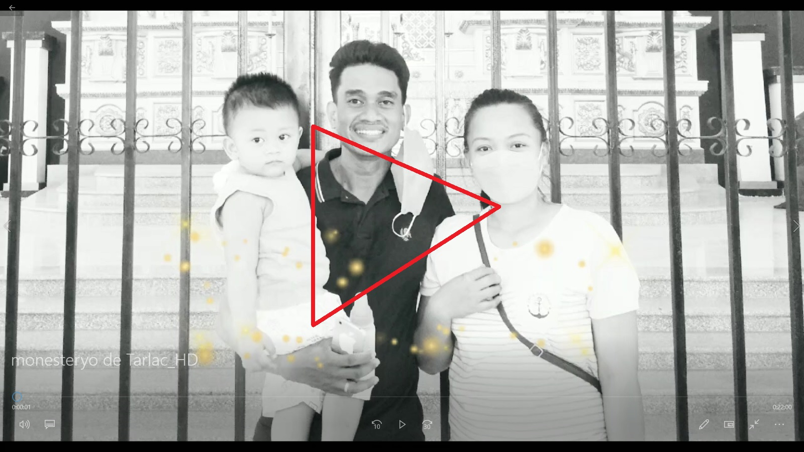
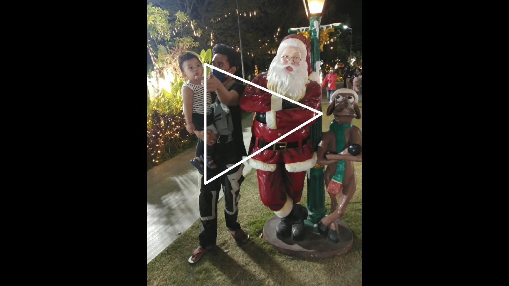
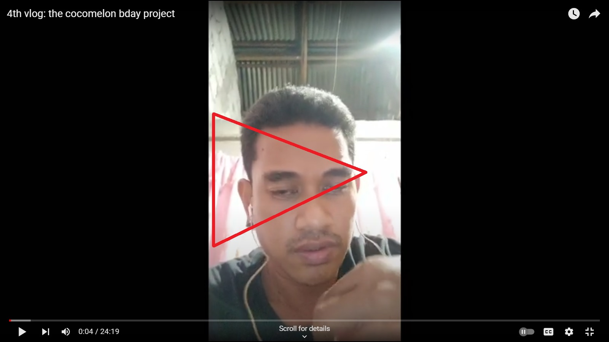
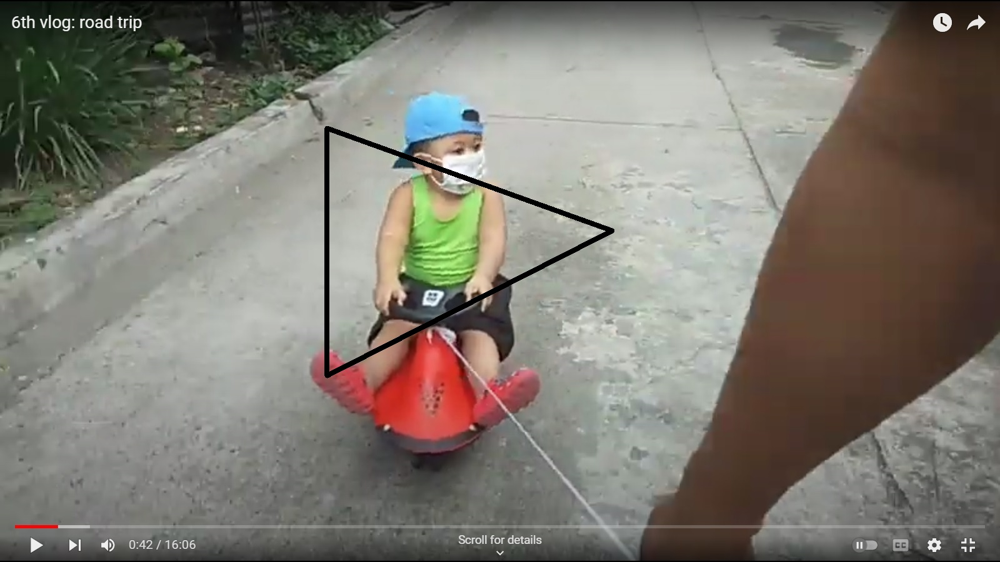
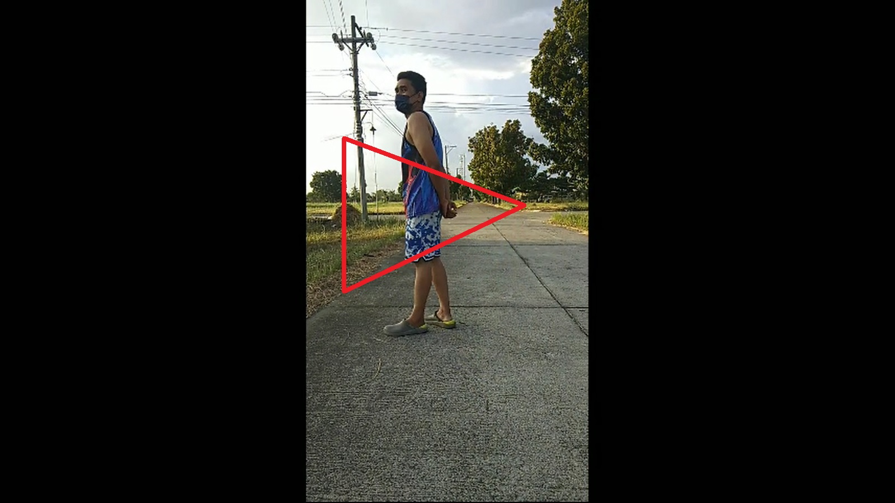
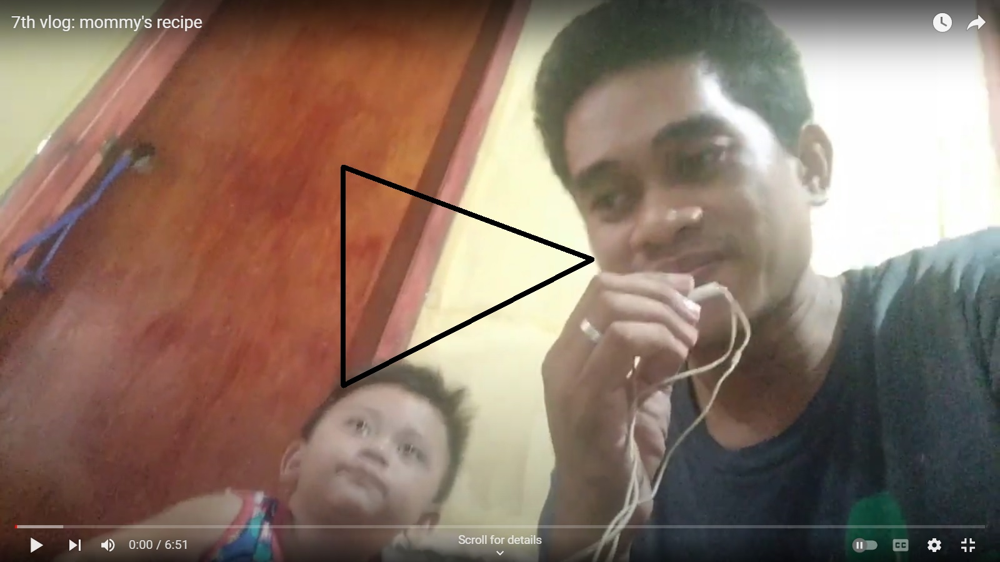

Kuha ang video na ito sa Tarlac Recreational Park. Mahinang mahina ako dahil sa sakit ko pero hindi ako nagpatalo anak. Nung mga panahong yan, iniisip ko na baka huling araw ko na sa mundo, kaya sinusulit ko ang bawat oras. Dito ko rin naisipan gumawa ng mga videos para sayo anak. Para kahit wala na ako makikita mo parin ang mga alaala natin ng magkasama.
Kaarawan ni auntie nitay nung magkayayaan pumunta sa Monasteryo de Tarlac. Ito yung unang beses kong makapunta rito anak.
Magpapasko nung maisipan namin pumasyal sa Tarlac Plaza.
Pangalawang kaarawan mo ito anak. Disyembre palang naghanda na kami para sa araw na ito.
Naisipan ko lang ipasyal ka sa harap ng Skyland Subdivision, Kaso hinabol tayo ng baka kasi kulay pula yung sasakyan mo anak.
Binigyan ka ng pera ng lola mo para pambili mo daw ng burger.
Sabi ko na sayo anak masarap magluto si papa ayaw mong maniwala.
Sobrang pabigat na ako sa mama mo dahil sa sakit ko, kaya pinaalis na nya ako sa sa bahay nila. Hindi na rin matapos tapos ang mga away at pagtatalo namin ng mama mo. Pero huwag kang magalit sa kanya anak kasi mahal ka ng mama mo. Ingatan mo siya kasi nag-iisa lang ang mama natin dito sa mundo. Hindi mo pwedeng palitan. Ang mga susunod na videos na mapapanuod mo ay mga videos na ginawa ko nang hindi na kita kasama anak.